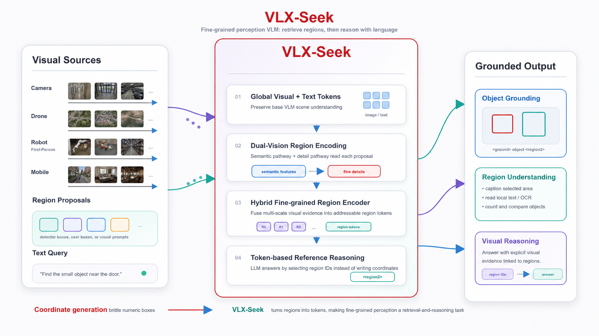
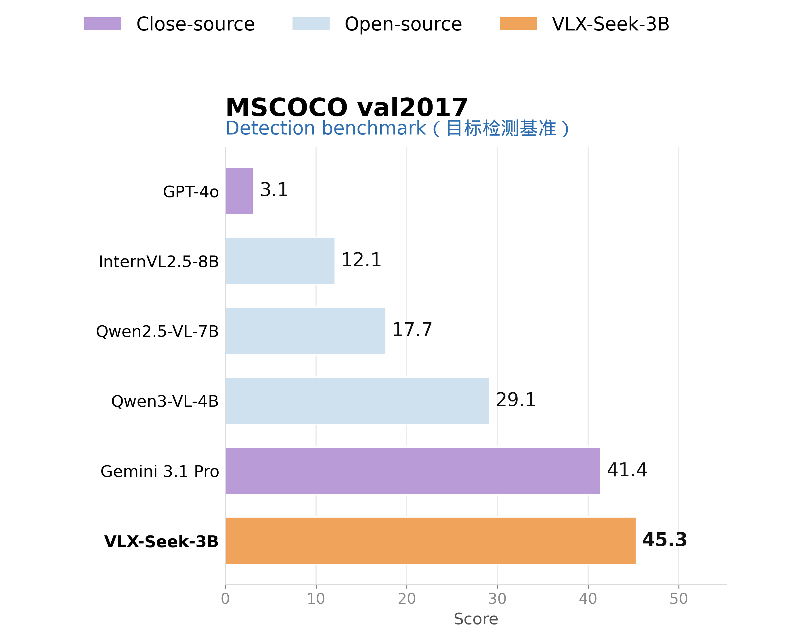
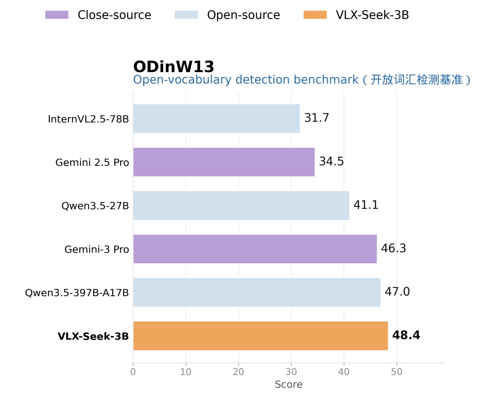
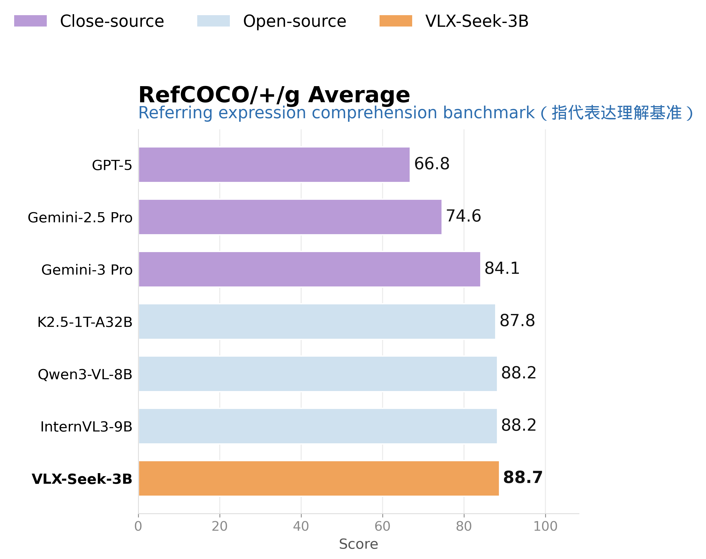
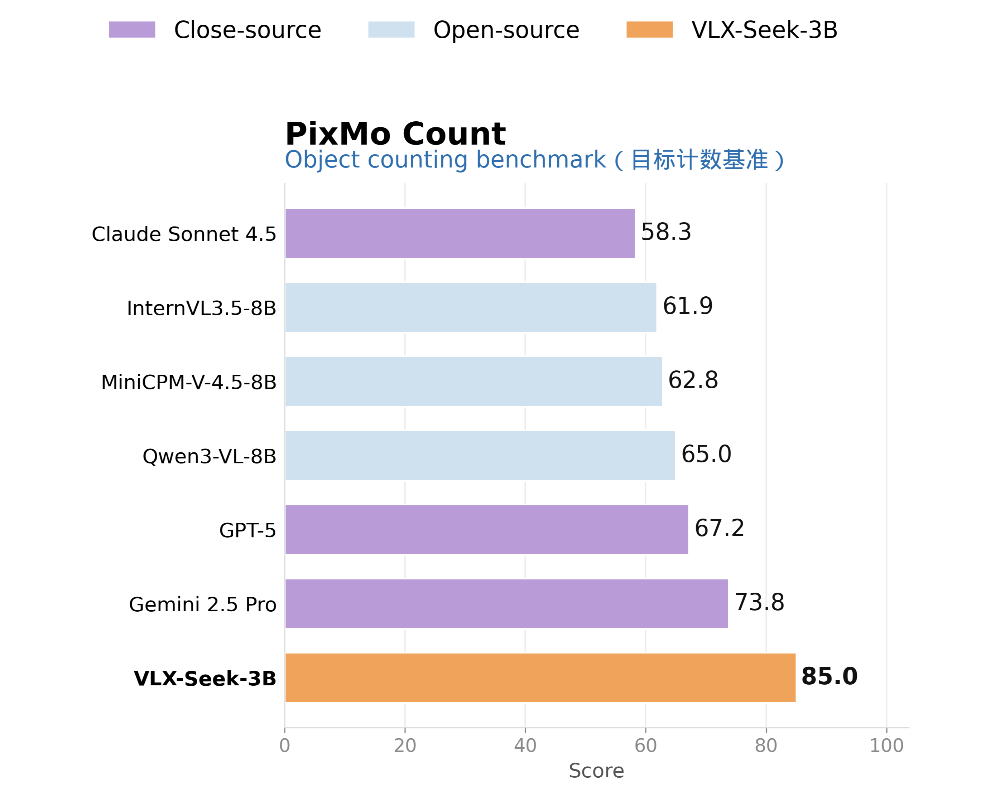

Abstract
When multimodal large models (VLMs) begin to enter real-world cameras, drones, and embodied robots, it is no longer sufficient to discuss only "how intelligent" a model is. Robots need not only to understand "what is in the image," but also to know precisely "where it is."
However, although today's mainstream VLMs perform well in high-level scene understanding, they often struggle with fine-grained perception tasks that require accurate localization. To address this limitation, we introduce VLX-Seek. As an efficient inference model designed for on-device embodied vision, VLX-Seek pushes VLM capabilities beyond "understanding what they see" toward precise localization.

Why VLMs Can Understand Images but Still Struggle with Precise Localization
General-purpose VLMs are strong at semantic understanding and language reasoning. They can describe image content, answer visual questions, understand complex instructions, and perform visual reasoning to some extent. However, precise localization is a different kind of problem. It requires the model not only to know "what this is," but also to determine "where it is," "where its boundaries are," "how many instances there are," and "which target matches the given description." These tasks depend on stronger capabilities in local detail perception, spatial structure understanding, and instance-level discrimination.
A common localization approach in traditional VLMs is to ask the language model to directly generate coordinates, such as [x1, y1, x2, y2]. This format looks simple, but in practice it is fragile. Coordinates are not natural language. LLMs are better at generating words, phrases, and sentences than at producing precise numerical values reliably. A single bounding box contains four coordinates, and multiple boxes turn into an even longer sequence of numbers. If anything goes wrong in the coordinate order, normalization range, punctuation format, or target count, the final result may become unparsable, or the predicted box may clearly deviate from the target.
Multi-object detection further amplifies this issue. One object requires four coordinates, while ten objects require dozens of coordinate tokens. The more targets there are, the longer the output becomes, making the model more likely to miss objects or make formatting errors. More importantly, long coordinate sequences directly slow down decoding: every additional coordinate token requires another autoregressive generation step. For offline cloud analysis, this may simply mean waiting a little longer; for embodied on-device scenarios such as robots, drones, cameras, and edge terminals, localization results often need to feed navigation, grasping, obstacle avoidance, or interaction in real time, so inference efficiency becomes a core requirement. Coordinate-generation-based VLMs spend too much of their output budget on numerical coordinates in multi-object scenes, rather than quickly selecting targets and making spatial decisions.
Therefore, the core issue is not that VLMs are completely unable to "see" images. Rather, the task format of precise localization is not naturally aligned with the generative mechanism of language models. VLX-Seek approaches the problem from a different angle: instead of asking the model to generate boxes from scratch, it asks the model to understand candidate regions and make selections among them.
Core Idea: From Coordinate Generation to Region Reference
The core paradigm of VLX-Seek can be summarized in one sentence: it reformulates object-centric perception tasks from coordinate generation into feature retrieval and region reference. In other words, the model no longer receives only full-image visual tokens and text tokens; it additionally receives a set of addressable region tokens. Each region token corresponds to a candidate region in the image, allowing the model to refer to these visual regions in the same way it refers to textual entities.
For example, the input may contain region indices such as <region0>, <region1>, and <region2>, together with their corresponding region tokens. When a user asks, "Where is the person wearing red?", the model does not need to generate coordinates from scratch. Instead, it determines which region token best matches the description and outputs the corresponding region index. In this way, localization is no longer about "generating precise geometric numbers," but becomes "language-conditioned retrieval among candidate visual regions."
This formulation better matches the capability boundaries of LLMs. Language models are naturally good at comparison, selection, reference, explanation, and reasoning. VLX-Seek encodes candidate regions into tokens that the model can process, allowing localization to fit more naturally into the language model's mode of operation. Although this change may appear simple, its impact is substantial: detection, referring expression comprehension, region captioning, region-level question answering, and object counting can all be unified under the framework of region reference. The model no longer merely says "there is a person in the image"; it can further indicate "this person in this specific region."
Inference Pipeline: From Region Retrieval to Region Tokenization
The inference pipeline of VLX-Seek can be divided into three steps.
The first step is to generate candidate regions. The system first uses an Omni Proposal Network (OPN) to retrieve regions in the image that may contain foreground objects. This step is not responsible for making the final category decision. Instead, it aims to identify as many meaningful object regions as possible, providing explicit visual candidates for the subsequent reasoning process of the language model. The design of VLX-Seek is decoupled: the candidate region generation network is not tightly bound to the VLM backbone. In practical applications, it can be replaced with other detectors, or the system can directly use manually specified regions of interest.
The second step is to encode candidate regions into region tokens. A candidate box itself is only a geometric range. It tells the model that "there is a region here," but it does not yet tell the model "what is inside this region," "how it differs from other regions," or "whether it matches the user's textual description." Therefore, VLX-Seek uses a Hybrid Fine-grained Region Encoder (HFRE) to extract region-level visual features from candidate boxes and project these features into the embedding space of the LLM. After this step, a region is no longer merely a set of coordinates; it becomes a visual representation that the language model can read, compare, and refer to.
The third step is to let the LLM reason based on region tokens. The model input no longer contains only global image tokens and text tokens. It also includes numbered region tokens, such as <region0>, <region1>, and <region2>. Users can describe a target in natural language, and the model performs localization and answering through region indices. This mechanism transforms localization into a more stable region reference task: instead of generating coordinates from scratch, the model selects, combines, and explains among explicit candidate regions.
HFRE: Enabling Region Tokens to Capture Both Semantics and Fine Details
The core component of VLX-Seek is HFRE, short for Hybrid Fine-grained Region Encoder. It addresses a key challenge: a single visual encoder often struggles to satisfy both semantic alignment and fine-grained spatial perception at the same time. The original visual encoder in a general-purpose VLM is usually already aligned with the language model and is good at providing global semantic information. It understands what the image is roughly about, what category a target may belong to, and supports high-level understanding. However, such encoders are often not trained for fine-grained detection, and their representations of small objects, boundaries, local textures, and multi-scale regions are usually insufficient.
Detection-oriented or high-resolution visual encoders are the opposite. They are more sensitive to local details, edges, textures, and spatial structures, but they may not naturally reside in a semantic space that the LLM can directly understand. The solution in VLX-Seek is to combine these two capabilities. The primary visual encoder preserves the semantic alignment ability of the original VLM, allowing the model to understand what a region "looks like" and "what it may be." The auxiliary visual encoder provides higher-resolution local details, enabling the model to perceive boundaries, textures, small objects, and differences between regions.
A SimpleFP module is then used to supplement ViT-style visual features with multi-scale representations. Objects in real-world images vary greatly in size. A single image may contain both a large person and small objects such as a phone, cup, or sign. Single-scale features struggle to handle all of these targets simultaneously, while a multi-scale structure helps the model better adapt to candidate regions of different sizes. Next, VLX-Seek extracts region features from the visual feature maps according to the candidate boxes, effectively converting "visual information from the whole image" into "visual information for each candidate object." Finally, a region-language connector projects these region features into the embedding space of the LLM, turning each candidate box into a region token that the language model can read, refer to, and reason over.
The core value of this architecture is that each region token carries two types of information at the same time: high-level semantics and fine-grained spatial details. For ordinary VQA, it may be enough for the model to know that "this is a car." But for open-vocabulary detection and embodied tasks, the model must also know "which car it is," "where the car is in the image," and "how its boundary differs from nearby objects." This is exactly the capability that HFRE is designed to provide.
Region Reference Mechanism: Turning Visual Regions into Language-Addressable Objects
VLX-Seek does not simply inject region features into the model. Instead, it introduces a token-based region reference mechanism. On the input side, each region is assigned an explicit index. For example, the 0th candidate region corresponds to <region0>, the 1st candidate region corresponds to <region1>, and the 2nd candidate region corresponds to <region2>. These region indices are fed into the language model together with their corresponding region tokens, allowing the LLM to bind region features with region identifiers.
On the output side, the model can express visual localization relationships through special tokens. For example: The <ground>people</ground><object><region2><region10></object> are dancing.
This indicates that the word "people" in the text corresponds to <region2> and <region10> in the image. In this way, the model outputs stable and easily parseable region references instead of a sequence of error-prone coordinate numbers. More importantly, region references are usually shorter than coordinate generation: the model only needs to output the corresponding region indices, rather than generating a coordinate sequence such as [x1, y1, x2, y2] for each target. The more targets there are, the more pronounced this difference becomes, leading to fewer output tokens, lower decoding cost, and faster inference.
This mechanism brings four direct benefits. First, localization results become more stable because the model outputs region indices rather than precise numerical coordinates. Second, the reasoning pipeline becomes clearer: the model can first understand the textual description, then identify the corresponding regions, and finally output parseable region references. Third, inference becomes faster, especially in multi-object detection and counting scenarios, where region-index outputs are much lighter than long coordinate sequences. Fourth, the task format becomes more unified: detection, referring expression comprehension, region captioning, region-level question answering, and counting can all be handled within the same region-token framework.
This is also the key difference between VLX-Seek and other detection-enhanced VLMs. VLX-Seek does not merely attach a detection head to a VLM; it introduces regions into the model as a new type of vision-language entity. In other words, VLX-Seek gives objects in an image a status similar to "language entities." The model can not only describe them, but also refer to them, compare them, and reason about them. At the same time, because the output format changes from long coordinate sequences to compact region indices, the system can maintain higher inference efficiency in complex multi-object scenarios.
Two-Stage Training: From Region Alignment to Perception Enhancement
VLX-Seek adopts a two-stage training strategy, with the goal of enhancing fine-grained perception while minimizing damage to the original VLM's general capabilities.
The first stage is region-language alignment. The focus of this stage is not to make the model immediately master all detection and perception tasks, but to first align the newly introduced region tokens with the feature space of the LLM. During training, the main parameters of the VLM component are frozen, concentrating the learning pressure on HFRE, the region-language connector, and the newly added special tokens. This allows the model to stably understand that "a region token corresponds to a visual region." In other words, the model first learns how to connect visual regions to the language model before handling more complex perception instructions.
The second stage is perception instruction tuning. This stage introduces richer perception tasks, including detection, referring expression comprehension, region captioning, region reasoning, counting, and OCR, allowing the model to learn how to use region tokens in real instructions. The key here is not simply to pile up more data, but to avoid two risks at the same time: first, damaging the model's original general visual understanding after enhancing fine-grained perception; and second, hallucinating answers when the target does not exist.
The first risk corresponds to catastrophic forgetting. The VLM originally has capabilities such as visual question answering, image captioning, and commonsense reasoning. If the training process is overly biased toward detection tasks, these general capabilities may be weakened. Therefore, normal VLM instruction data is mixed into training to preserve the model's original vision-language abilities. The second risk corresponds to the model's rejection capability in open-vocabulary detection. The challenge in real-world scenarios is not only to "find what exists," but also to "avoid finding what does not exist." For this reason, rejection samples are included during training, teaching the model to answer "not present" when the requested target is absent, rather than forcibly pointing to some region.
This is also where VLX-Seek is more complete than a simple detection-enhanced approach. It learns not only "how to find a target," but also "when not to find one."
Capability Results: Compact Models Address the Fine-Grained Perception Bottleneck
From the experimental evaluations, VLX-Seek-3B already shows clear advantages across multiple fine-grained perception tasks.
On general object detection, VLX-Seek-3B achieves 45.3 mAP in object detection on COCO, outperforming Qwen2.5-VL-7B at 17.7 and Gemini 3.1 Pro at 41.4. This indicates that VLX-Seek is not merely stronger in language reasoning; it genuinely addresses the region-level localization weakness of VLMs.
On open-vocabulary detection, VLX-Seek-3B reaches 43.7 on OVDEval. The challenge of OVDEval is that it requires the model not only to recognize open categories, but also to handle more complex language labels and hard negative samples. In other words, the model must distinguish between "targets that truly match the description" and "targets that look similar but do not actually match." VLX-Seek's performance on this task shows that the region-token mechanism can support not only standard detection, but also more complex open-semantic localization by leveraging the language understanding ability of VLMs.
On complex referring expression tasks, VLX-Seek-3B achieves an average score of 88.7 across the RefCOCO series, higher than Gemini 3 Pro at 84.1 and Qwen3-VL-8B at 88.2. This result shows that VLX-Seek can locate not only common category objects, but also understand more complex natural-language descriptions, such as "the second person from the left wearing black," "the cup near the table," or "the object that is partially occluded by another object."
On object counting, VLX-Seek-3B achieves 85.0 on PixMo-Count, outperforming Gemini 2.5 Pro at 73.8. Counting may seem simple, but it has long been difficult for VLMs because models that rely only on global semantics can easily overestimate or underestimate the number of objects. The advantage of VLX-Seek is that it can first detect and refer to target instances, then aggregate them for counting. This "detect first, then count" approach is more reliable than asking the model to estimate the quantity directly from its overall impression of the image.
Detailed Benchmark Scores




In one sentence, the technical value of VLX-Seek lies in making VLMs behave more like visual systems that can truly "see details," rather than merely language interfaces that describe the general content of an image.
How Is VLX-Seek Different from Traditional Approaches?
Compared with ordinary VLMs, the key difference of VLX-Seek is that it does not stop at describing the image. Instead, it explicitly models candidate regions within the image. An ordinary VLM may answer "how many people are in the image," but it often becomes unstable in complex localization, object counting, and open-vocabulary detection. VLX-Seek introduces target instances into the model through region tokens, giving the model stronger region-level judgment capability.
Compared with specialized detectors, VLX-Seek is different in that it does not merely output bounding boxes for fixed categories. Traditional detectors are stable on closed-set categories, but they have limited ability to understand natural-language descriptions, open-vocabulary categories, complex relationships, and multi-turn references. VLX-Seek leverages the language understanding and world knowledge of VLMs to combine detection with semantic reasoning.
Compared with coordinate-generation-based VLMs, VLX-Seek does not force the language model to directly bear the burden of precise numerical generation. Coordinate generation is vulnerable to formatting errors, accumulated errors in long sequences, and missed detections in multi-object scenarios. Region reference, by contrast, is closer to the reference and selection tasks that LLMs are good at. At the same time, VLX-Seek is also more efficient at inference: generative VLMs often need to output a complete coordinate sequence for each target, while VLX-Seek only needs to output the corresponding region indices. The more targets there are, the more obvious the advantage of region reference becomes in terms of output length and decoding cost.
Compared with approaches that attach an external detection head, VLX-Seek is different in that it does not simply append detection results outside the VLM. Instead, it turns regions into vision-language entities that can be read and referenced inside the model. In this way, regions are not merely final outputs; they can genuinely participate in the language reasoning process.
This design gives VLX-Seek two types of capabilities at once: on the one hand, it inherits the detector's ability to recall spatial regions; on the other hand, it preserves the VLM's ability to understand natural language, open categories, and complex semantic relationships.
Technical Value: Fine-Grained Localization for Embodied Action
The core value of VLX-Seek is that it enables VLMs to move beyond merely "describing images" and instead use a smaller model scale to perceive and anchor targets more accurately. It allows compact VLMs to achieve performance close to, or even surpassing, larger models on tasks such as object detection, open-vocabulary localization, complex referring expression comprehension, region-level OCR, and object counting. This is critical for embodied devices, because what robots, drones, cameras, and edge terminals truly need is not just a large model with higher offline benchmark scores, but a perception module that can run continuously under limited compute, memory, and power budgets.
Smaller models and faster inference also mean lower deployment costs. For on-device embodied systems, the lighter the model, the lower the required compute and memory, the more controllable the power consumption, and the less dependence there is on high-end GPUs or cloud-based inference. This reduces not only hardware and inference costs, but also the latency, bandwidth usage, and privacy risks introduced by edge-cloud transmission. In other words, the value of VLX-Seek is not only that it "sees more accurately," but also that it brings fine-grained visual perception closer to a form that real devices can run reliably over long periods.
More importantly, an embodied system must have stable spatial anchors before it can act. It needs to know where the target is, which one it is, whether it is still present, and how it relates to the surrounding environment. VLX-Seek fills exactly this gap in region-level perception: it can provide clear target locations and visual evidence for following, obstacle avoidance, inspection, grasping, navigation, and multi-turn interaction. For on-device embodied intelligence, this is not merely an incremental improvement; it is a foundational capability for moving from "understanding the image" to "executing actions."
For more technical details and open-source projects, please visit: om-ai-lab/VLX-Seek.